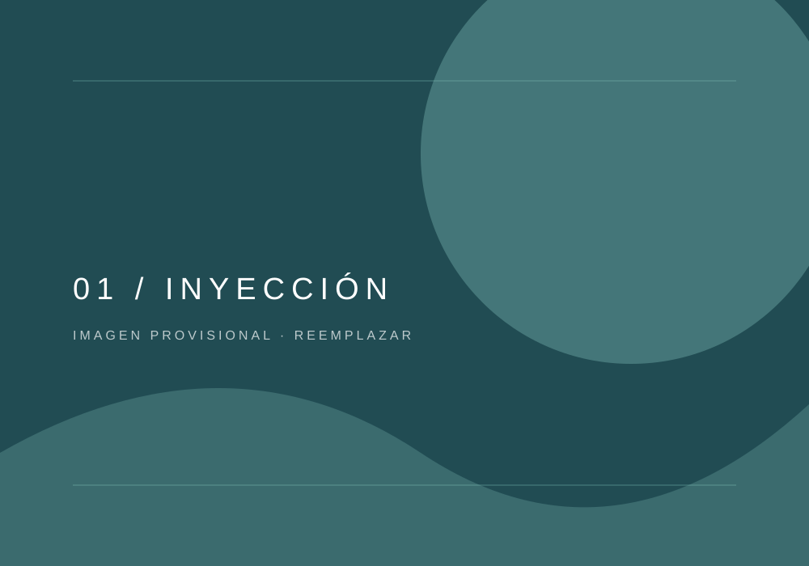
01
Inyección
Precisión desde el inicio del proceso.
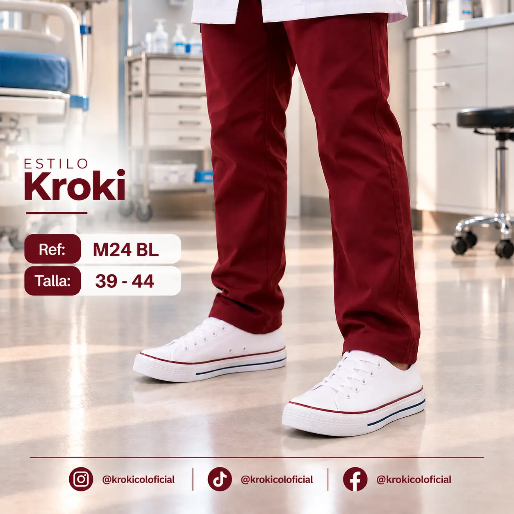
HECHO EN COLOMBIA
Experiencia, capacidad productiva y pasión por crear calzado para cada etapa de la vida.
Conoce KROKICOL ↗En KROKICOL trabajamos para crear calzado que acompaña diferentes momentos de la vida. Integramos conocimiento, procesos productivos y un equipo comprometido con cada detalle.
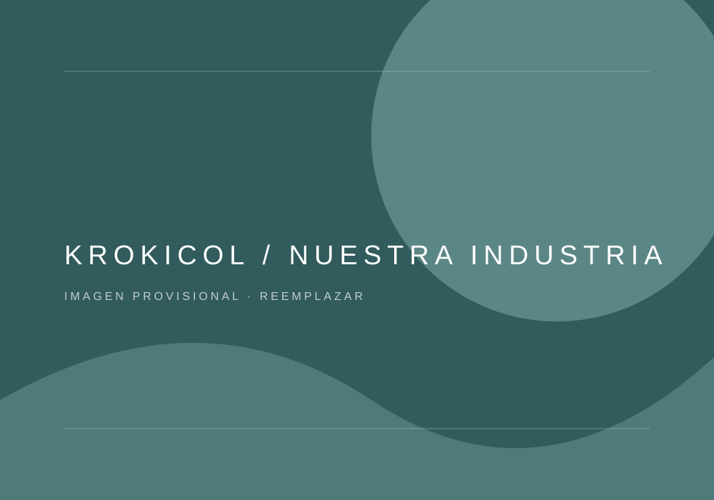
NUESTRA INDUSTRIA · COLOMBIAConoce los procesos que hacen posible cada producto. Una operación que integra diferentes áreas y personas trabajando en conjunto.

Precisión desde el inicio del proceso.
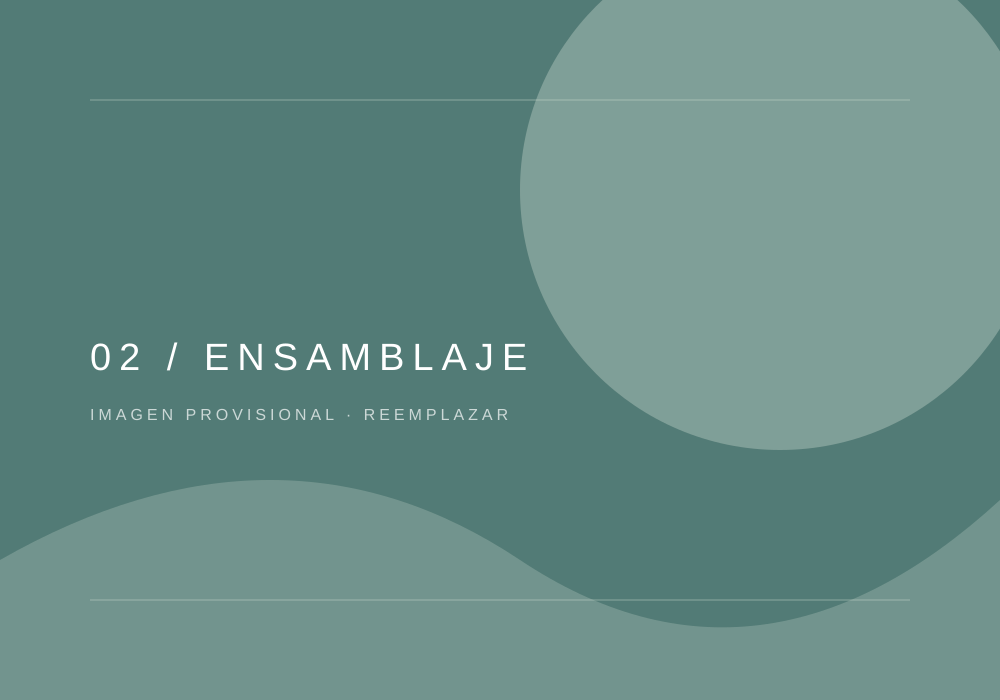
Cada pieza encuentra su lugar.
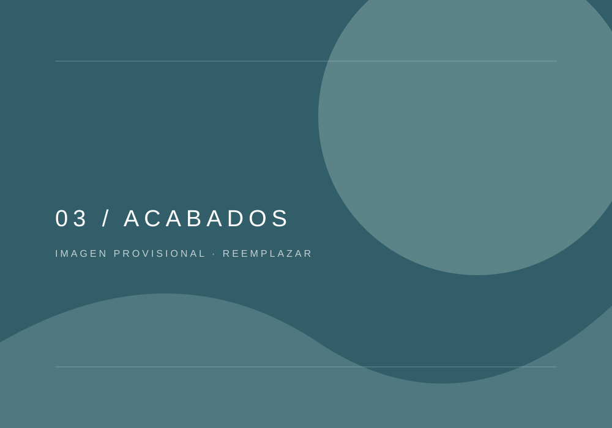
Atención a los detalles.
Revisión antes de llegar a su destino.
Explora nuestras líneas y descubre la variedad de productos que desarrollamos.
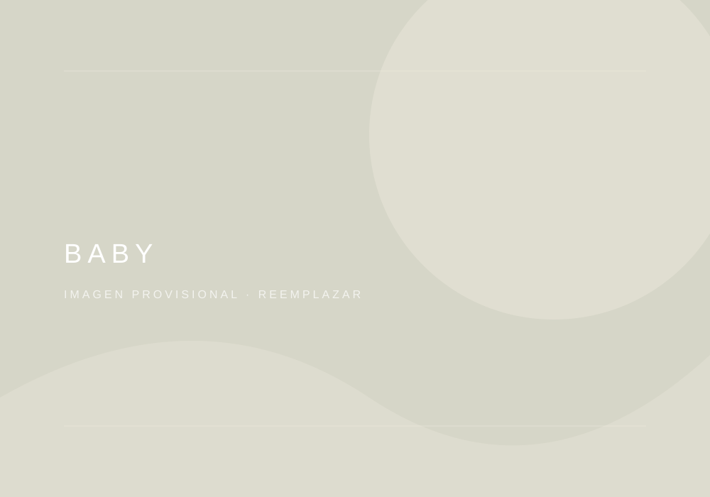
01Baby ↗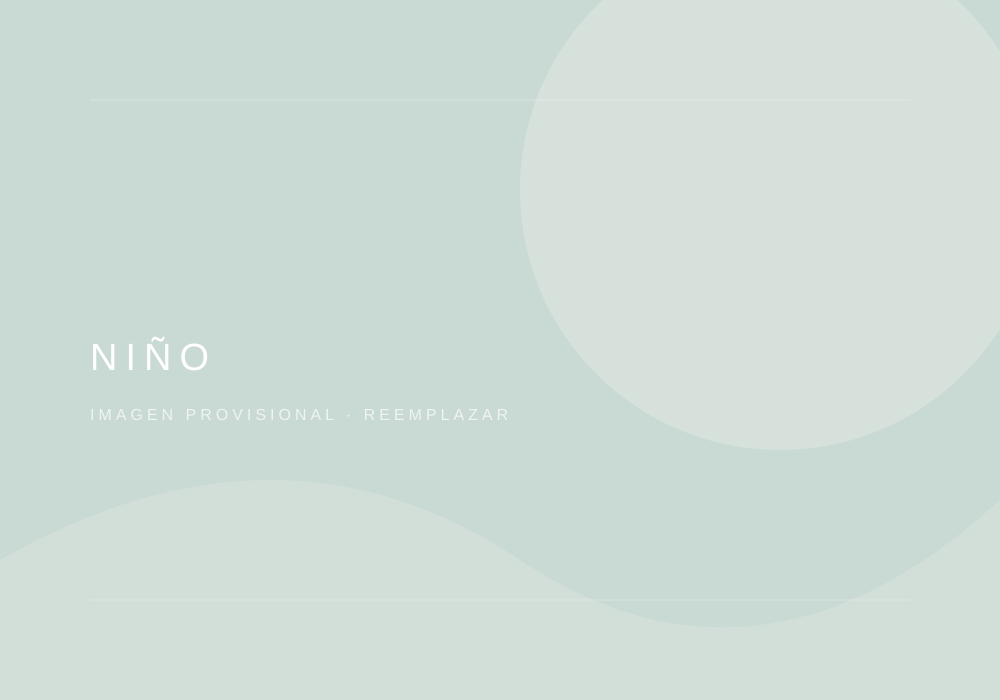
02Niño ↗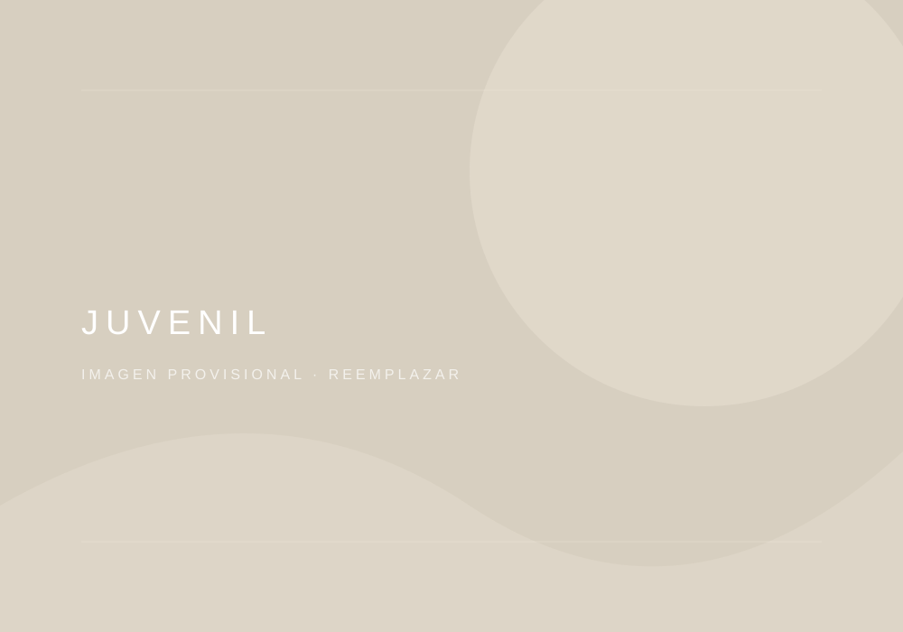
03Juvenil ↗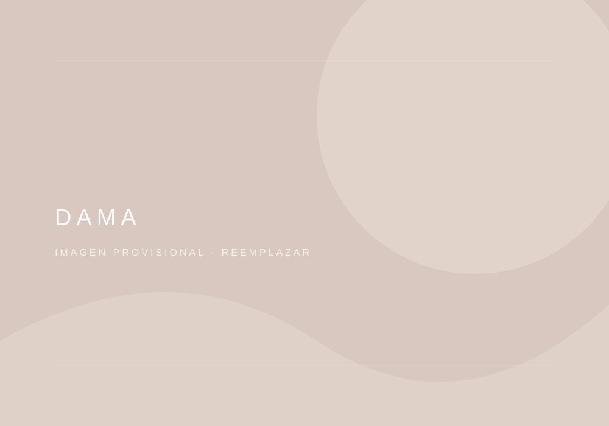
04Dama ↗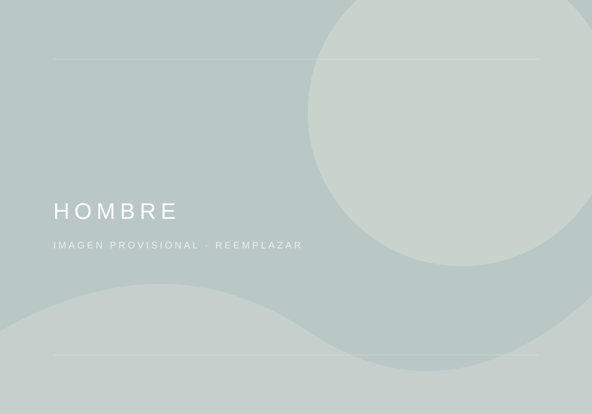
05Hombre ↗Las imágenes y categorías de esta primera versión son provisionales. Se reemplazarán por fotografías y referencias aprobadas por KROKICOL.
Personas, procesos, productos y espacios que cuentan nuestra historia.
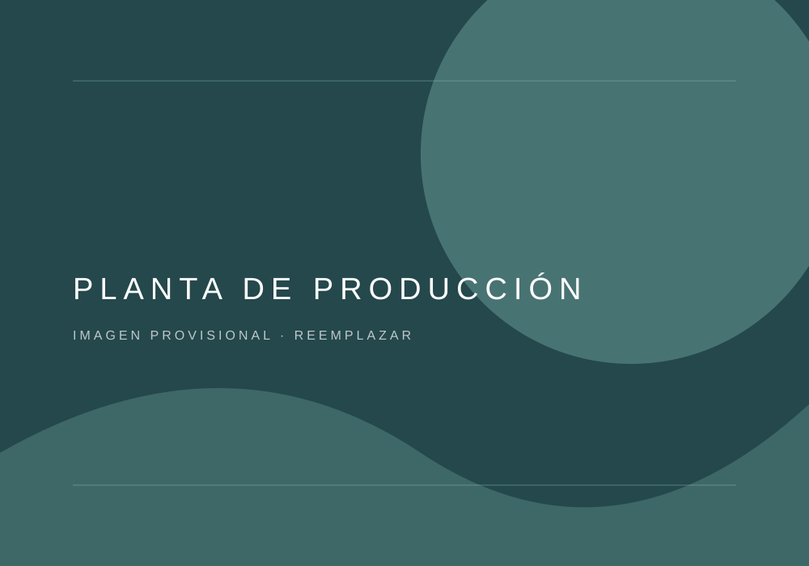
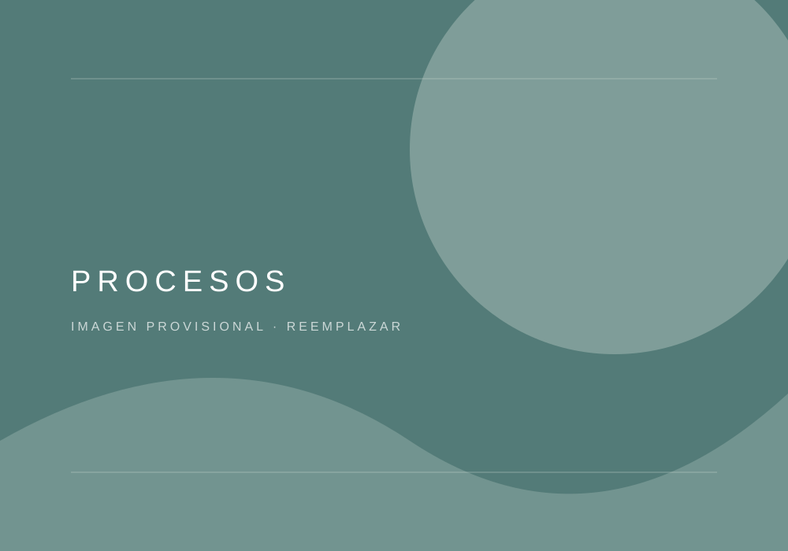
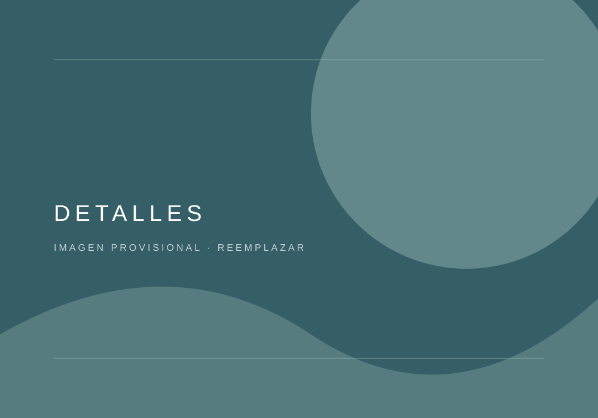
Estamos presentes en diferentes ciudades del país a través de una red de distribuidores. Encuentra el más cercano y conoce dónde adquirir nuestros productos.
Localidad o dirección pendiente.
Teléfono: pendiente
Datos por actualizarDirección pendiente.
Teléfono: pendiente
Datos por actualizarDirección pendiente.
Teléfono: pendiente
Datos por actualizar